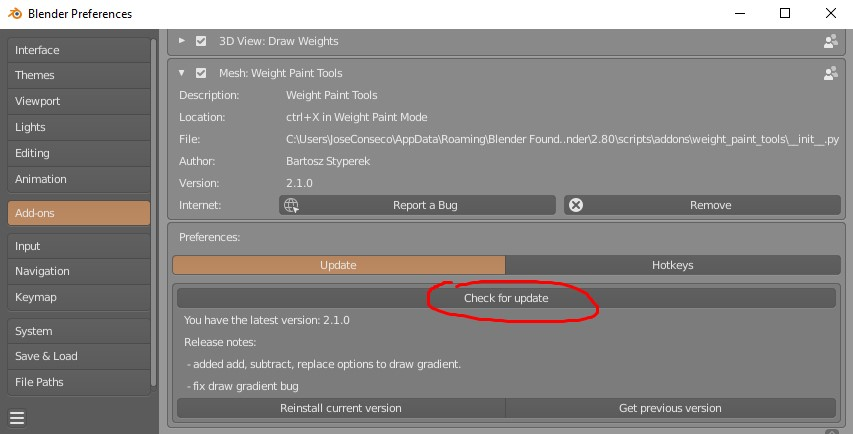

Weight Paint Tools¶
Addon for blender containing tools for simplifying workflow in blender weight paint mode. Useful for riggers, animators and character artist but not only.
- convenient pie menu for applying weights to vertices - with properly working symmetry and auto normalization
- custom weights mirroring for all tools, works even if topology is not symmetrical.
- symmetrize vertex groups that works even if topology is not symmetrical
- easy picking/copying vertex weights, from multiple selected vertices.
- Transfer vertex weights - add, replace, multiply weights from one bone to another
- improved smoothing, level weights - with properly working symmetry and auto normalization
- Draw gradient with custom gradient falloffs (Ease, linear, Gaussian), and mirroring.
- Override from adjacent- replace broken weights on selected vertices from adjacent geometry.
- Project weights - Project weights from non selected mesh parts to selection
Video Tutorial¶
For blender 2.79 but lots of things are the same in Blender2.8
Installation¶
To install Weight Paint Tools you need zip file from your Gumroad account.
Then, inside Blender, go to:
- Edit -> Preferences -> Add-ons, and click 'Install' button.

And navigate to Weight Paint Tools_2.x.zip (for Blender 2.8) file location.
Updating¶
Weight Paint Tools has build in auto updater. When you use it, updater will download latest Weight Paint Tools release and install in background. To use auto updater go to:
- Edit -> Preferences -> Add-ons -> Weight Paint Tools -> press 'Check for update'.
 If new version is found, press 'Update addon' button, wait few seconds for download, installation and restart blender. Or you download update manually by getting new zip file from your Gumroad account. You should have received download link to zip file, with email when you purchased Weight Paint Tools.
Location¶
Weight Paint Tools pie menu in Weight Paint Mode:
- 'Ctrl+X' hotkey (can be changed in addon preferences).
Support¶
For support or bug reports use this discord server.